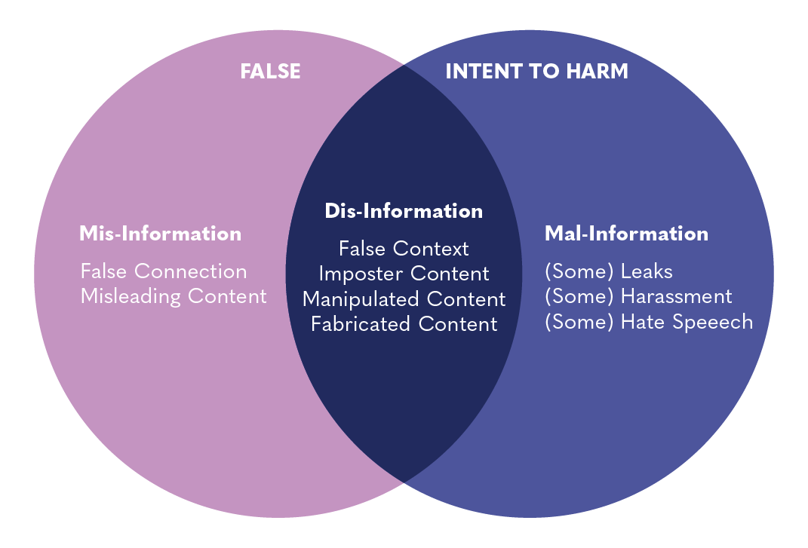
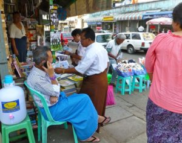
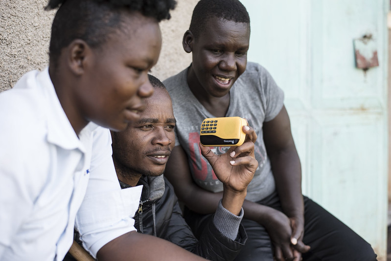

Disinformation
What is information manipulation?
Information manipulation encompasses a set of tactics involving the collection and dissemination of information to influence or disrupt democratic decision making. Many different types of content can be involved in information manipulation, such as disinformation, misinformation, mal-information, propaganda, and hate speech. This content can be used to influence public attitudes or beliefs, persuade individuals to act or behave in a certain way—such as suppressing the vote of a particular group of people—or incite hate and violence. A variety of actors can engage in information manipulation, from domestic governments, political parties, and campaigns to commercial actors to foreign governments and extremist groups. Information manipulation can co-opt traditional information channels, like television broadcasting, print, and radio, as well as social media.
Disinformation
Disinformation is false or misleading information disseminated with the intent to deceive or cause harm. Disinformation is always purposeful, and is not necessarily composed strictly of outright lies or fabrications. The inclusion of some true facts or “half truths” stripped of context can make disinformation more believable and more difficult to recognize.
Disinformation = false information + intent to harm
Misinformation
Misinformation is the inadvertent sharing of false or misleading information. It differs from disinformation due to the absence of an intent to deceive or cause harm, and the person sharing the information generally believes it to be true. One example of misinformation are the rumors spread on social media during the COVID-19 pandemic about “cures” that had no basis in medical science.
Misinformation = false information + mistake

Claire Wardle & Hossein Derakhshan, 2017
Mal-information
Mal-information is truthful information presented without proper context in an attempt to deceive, mislead, or cause harm.
Mal-information = true information + intent to harm
Hate speech[2]
Hate speech is the use of discriminatory language with reference to a person or group on the basis of identity, including an individual’s religion, ethnicity, nationality, ability, gender or sexual orientation. Hate speech is often a part of broader information manipulation efforts.
Propaganda[3]
Propaganda is information designed to promote a political goal, action or outcome. Propaganda often involves disinformation, but can also make use of facts, stolen information or half-truths to sway individuals. It often makes emotional appeals, rather than focusing on rational thoughts or arguments. Propaganda is commonly associated with state-affiliated actors, but can also be spread by other groups and individuals.
Related terms[4]
Dangerous speech
According to the Dangerous Speech Project, “dangerous speech” is any form of expression (speech, text, or images) that can increase the risk that its audience will condone or participate in violence against members of another group.” This concept provides a constructive framework for thinking about hate speech that is liable to cause violence. Hallmarks of dangerous speech include dehumanization (referring to people as insects, bacteria, etc.) and telling people they face a mortal threat from a disfavored minority group.
The term “fake news” has no accepted definition and is inaccurately used as a synonym for disinformation. The term has been popularized in recent years and often is used to discredit information that one finds unfavorable, regardless of the truthfulness. As such, the terms “misinformation,” “disinformation,” or “mal-information” should be used in place of “fake news.”

Astroturfing: The attempt to create an impression of widespread grassroots support or interest in a policy or idea by using fake online accounts, such as networks of bots or fake pressure groups.
Bots: A bot is a software program that performs automated, repetitive tasks. In the case of social media, a bot can refer to an automated social media account.
Click Bait: A sensationalized or misleading article title, link, or thumbnail designed to entice users to view content.
Cyberviolence and Cyberbullying: Cyberviolence refers to acts of abuse using digital media. Cyberbullying refers to recurrent cyberviolence that is characterized by an imbalanced power dynamic.
Deepfake: Photos or videos that have been altered or entirely fabricated through machine learning to create a false depiction of something, such as a politician making an imagined statement. Using Deepfakes to confuse voters during election periods by fabricating statements from candidates and election officials is a prime example of information manipulation.
Doxxing: Publishing private or identifying information, especially sensitive personal information, about a person online with malicious intent.
Information Warfare: The use of ICT such as social media to influence or weaken an opponent, including through disinformation and propaganda.
Trolling: Creating intentional discord in an online discussion space, starting quarrels between users, or generally upsetting people by posting inflammatory, insulting, or off-topic messages.
Upload Filter: Automated computer programs that scan content uploaded to an online platform before it is published. Upload filters are used by social media platforms to identify content that violates the companies’ Terms of Service, such as child sexual abuse material (CSAM).
User Generated Content (UGC): Any content such as images, videos, text, and audio that has been posted by users on online platforms.
Virality: The tendency of an image, video, or piece of information to be circulated rapidly and widely on online platforms. When content goes “viral,” important context around the information being shared such as the source, author, and publication date is often lost (known as “context collapse”), potentially distorting how the information is received and interpreted by viewers.
For additional definitions, see the EU Disinfo Lab’s disinformation glossary, a collection of 150+ terms to understand the information disorder.
How does information manipulation disrupt and distort the information ecosystem?
Information manipulation is not a new threat, but has been amplified in the digital era. Social media platforms and the algorithms that underpin them facilitate the spread of information—including false information—at unprecedented speeds. As citizens around the world come to rely on social media for personal communication, news consumption, and generally developing a day-to-day understanding of what is happening in the world, they become increasingly vulnerable to information manipulation on these platforms.
While popular social media platforms such as Facebook, X (formerly known as Twitter), and YouTube are often criticized for their role in facilitating information manipulation, this challenge is also prevalent on other platforms like Instagram, TikTok, Reddit, and even Pinterest. Information manipulation is also common on encrypted and non-encrypted messaging apps like LINE, Telegram, WhatsApp, Facebook Messenger, Signal, WeChat, and Viber. The rise of various commercial actors offering disinformation as a service makes it harder for social media companies to detect and take action against information manipulation, as trolls-for-hire are paid to pollute the information sphere. The distinction between automated bot accounts and human curated content is also becoming less clear, with some studies suggesting that less than 60% of global web traffic is human. See the for more information on how the revenue model of many social media platforms can further disincentivize the proactive elimination of mis- and disinformation and inauthentic behavior.
Research has shown that false and misleading content tends to reach online audiences more quickly than fact-based information on the same topic. One study on the spread of falsehoods on X, for example, found that a false news story tended to reach an audience of 1,500 people six times faster than an accurate one. Why is this? Following initial assessments of disinformation that focused on its supply—including how the internet and social media have increased the reach, speed, and magnitude of disinformation—researchers turned their focus to the demand for disinformation. Human psychology was found to play a role in the consumption of information that reinforces existing views and biases, evokes a strong emotional response, and/or demonizes ‘out-groups’. Digital platforms that rank and recommend content to optimize engagement and time spent on the platform create “degenerate feedback loops,” that amplify and compound these tendencies.
Online information manipulation campaigns can be facilitated and exacerbated by flawed content moderation practices and digital advertising-based revenue models.
Content moderationThe rampant spread of mis- and disinformation, hate speech, and harassment on social media platforms has placed a spotlight on their content moderation policies and procedures, which are often implemented with little to no oversight. Social media platforms have been criticized for removing too much content, for not removing enough content, for developing algorithms that fail to detect the nuances of hate speech and misinformation, and for employing human moderators that suffer from low pay, poor working conditions, and trauma induced by the harmful content they review. Amid a cacophony of voices with opinions on what content should and should not be allowed on platforms, social media companies struggle to find the right balance between absolute free speech and protecting users from information manipulation. Legislation like the European Union’s Digital Services Act provides lawmakers with a tool to hold platforms accountable for their role in facilitating information manipulation and presents “a new way of thinking about content moderation that is especially valuable for the counter-disinformation community.”
See the Social Media resource[8] for more information on content moderation.
Digital advertising has enabled the self-financing of websites and blogs that share hateful, incendiary, and/or misleading content. Programmatic advertising, which relies on automated technology and algorithmic tools to buy and sell ads, is particularly problematic because advertisers may end up financing these outlets without ever being aware their ads have been placed on them.
The online movement Sleeping Giants emerged to tackle this challenge by alerting companies when their ads are placed next to inflammatory or controversial content. Check My Ads is another resource that offers services to help prevent brands from being associated with disinformation and dangerous speech. The Ads for News initiative supports local journalism by providing brands and media buyers with a curated, global inclusion list of trusted local news websites that have been screened to exclude disinformation and other content unsuitable for brands.
See the Social Media resource[9] for more information on digital advertising.
Information manipulation is a common practice of authoritarian regimes which use social and traditional media to sow chaos and confusion and undermine democratic processes. Government entities within Russia previously engaged in information manipulation during elections in Europe and elsewhere by leveraging automated bot accounts and troll farms to share and amplify disinformation on social media with the goal of deepening existing social and political divides within the targeted countries.
The practice of astroturfing by foreign governments, interest groups, and even advertisers is a common form of information manipulation. Astroturfing refers to the use of multiple online identities (bots) and fake lobbying groups to create the false impression of widespread grassroots support for a policy, idea, or product. This technique can be used to divert media attention or establish a particular narrative around an event early on in the news cycle. Other information manipulation tactics may include search engine manipulation, fake websites, trolling, “hack-and-leak” operations, account takeovers, and censorship.
Information manipulation does not only occur in online spaces. It can also be spread through traditional media sources (like television, radio, and print outlets), as well as through academia. For example, traditional media outlets may inadvertently amplify content created as part of an information manipulation campaign if that content has been shared by an important political figure, if the content is particularly sensational and likely to attract audiences, or even through coverage intended to dispute the content of the manipulation campaign. A sophisticated actor that engages in information manipulation may capture prominent news outlets or give grants to research entities to produce analysis that supports their objectives.
How does information manipulation affect civic space and democracy?

Information manipulation is as much an attack on trust as it is on truth. A contested information environment can contribute to decreasing levels of public trust as citizens become unable or unwilling to distinguish between legitimate and illegitimate sources of information. The hollowing out of the traditional media industry and the rise in consumption of news via social media contribute to this trend, particularly in contexts where information literacy is low and democratic institutions are weak. During health crises, natural disasters, and other emergencies, a lack of public trust combined with rampant mis- and disinformation can hinder response efforts and threaten citizens’ health and well-being.
Illiberal governments are increasingly investing in information manipulation campaigns targeting civil society, human rights defenders, and marginalized groups. In Myanmar, for example, military personnel engaged in a systematic campaign on Facebook to spread propaganda and incendiary comments about the country’s mostly Muslim Rohingya minority group, ultimately leading to widespread offline violence and the largest forced migration in recent history. The harassment and trolling of journalists and political candidates (particularly women) on digital platforms can lead to self-censorship or their departure from online spaces altogether, with a negative effect on the diversity of voices in the information space.
On the other hand, governments from Singapore to Kenya to Cambodia have also enacted and used “fake news” laws to restrict free expression and stifle dissent in the name of tackling information manipulation. During the COVID-19 pandemic, an Egyptian journalist who criticized the government’s response was charged with spreading false news, misusing social media, and joining a terrorist group—demonstrating how the overzealous application of such laws can facilitate censorship. These “fake news” laws can sometimes even extend beyond national borders, as in the case of a Malaysian NGO whose website was blocked in Singapore after publishing an article about the country’s death row prisoners. Legal provisions that enable the restriction of content may be written into a variety of laws on cybercrime, defamation, information technology, sedition, social media, etc.
As in the case of the Russia-Ukraine war (dubbed by some as the first full-blown “social media war”), conflicts now play out not only on the battlefield but on social media and other online spaces. Russia’s information campaign against Ukraine included the use of propaganda, fake social media accounts, and manipulated videos to sow division, generate confusion, and generally erode international support for Ukraine. These efforts have been more successful in swaying public opinion in some countries and regions than others, but generally hold important lessons for the role of disinformation in future international conflicts.
Information manipulation and elections
The strategic deployment of false, exaggerated, or contradictory information during elections is a potent tool for undercutting democratic principles. Deliberately blurred lines between truth and fiction amplify voter confusion and devalue fact-based political debate. Rumors, hearsay, and online harassment are used to damage political reputations, exacerbate social divisions, mobilize supporters, marginalize women and minority groups, and undermine the impact of change-makers.
Content intended to discourage or prevent citizens from voting can take the form of inaccurate information about the date of an election, or efforts to persuade people that an election is rigged and their vote won’t matter. Voter suppression content that questions the legitimacy of electoral processes or the security of voting systems can also lay the groundwork for disputing election results, as information manipulation degrades trust in election management bodies. This content does not require malicious intent, as someone who unknowingly shares incorrect information about the deadline for voter registration, for example, could still confuse other citizens and prevent them from being able to vote in the election.
Different actors have different goals for influencing narratives during an election. For example, political parties and campaigns may use mis- or disinformation, mal-information, or propaganda to discredit the opposition or manipulate political discourse in a way that serves their campaign agenda, while a foreign adversary might seek to influence the election outcome, advance national interests, or sow chaos. A coordinated information manipulation campaign on Whatsapp—which included doctored photos, manipulated audio clips, and fake “fact-checks” discrediting authentic news stories—played a troubling role in boosting far-right candidate Jair Bolsonaro to the Brazilian presidency in 2018 (see the case studies section for more on the role of information manipulation in Brazil).
Ultimately, information manipulation campaigns can destabilize political environments, exacerbate potentials for electoral-related violence, pervert the will of voters, entrench authoritarians, and undermine confidence in democratic systems more broadly. In many fragile democracies, strong democratic institutions that could help counter the impact of fake news and broader information manipulation campaigns, such as a robust independent media, agile political parties and sophisticated civil society organizations, remain nascent.
What can be done to address information manipulation?

One tool that journalists, researchers, and civil society can use to counter information manipulation is fact-checking, or the process of verifying information and providing accurate, unbiased analysis of a claim. Hundreds of civil society fact-checking initiatives have sprung up in recent years around specific flashpoints, with the lessons learned and infrastructure built around those flashpoints then being applied to other issues that impact the same information ecosystems. During the 2018 Mexican general elections, the CSO-driven initiative Verificado 2018 partnered with Pop-Up News, Animal Político, AJ+ Español, and 80 other partners to fact-check and distribute election-related information, particularly among youth. Other successful fact-checking initiatives around the world include Africa Check, the Cyber News Verification Lab in Hong Kong, BOOM in India, Checazap in Brazil, the Centre for Democracy and Development’s Fact Check archive in West Africa, and Meedan’s Check initiative in Ukraine.
Social media companies have also invested in fact-checking teams and technologies, and have built partnerships with news agencies to counter the hoaxes, conspiracy theories, rumors, and propaganda that circulate on their platforms.
Fact-checks or “debunks” are effective, but they tend to be labor intensive and they are not read by everyone. “Prebunking” is an alternative approach based on the idea of inoculating people against false or misleading information by showing them examples of information manipulation so they are better equipped to spot and question it in the future. According to First Draft, there are three main types of prebunks:
-
Fact-based: Correcting a specific false claim or narrative
-
Logic-based: Explaining tactics used to manipulate
-
Source-based: Pointing out bad sources of information
In 2022, Google launched a prebunking campaign in Poland, the Czech Republic, and Slovakia that used videos to dissect different techniques seen in false claims about Ukrainian refugees. Researchers have also created online games that let players pretend to be trolls spreading fake news with the goal of improving people’s understanding of how information manipulation campaigns are built, and ultimately increasing their skepticism of them.
Media literacy programs can help increase citizens’ ability to differentiate between factual and false or misleading content by encouraging the use of critical thinking skills while consuming traditional and online media content. These programs can also raise awareness about how information manipulation disproportionately harms women and marginalized groups. Media literacy is a life-long process, and should be but one part of a comprehensive toolkit to counter information manipulation.
IREX’s Learn to Discern (L2D) initiative aims to build communities’ resilience to disinformation, propaganda, and hate speech in traditional and online media. After piloting a media literacy curriculum in classrooms, libraries, and community centers in Ukraine, L2D was extended to other countries including Serbia, Tunisia, Jordan, and Indonesia. Global initiatives such as the Mozilla Foundation’s Web Literacy framework and Meta’s digital literacy library provide access to educational media literacy materials and offer an opportunity for users to learn how to effectively navigate the virtual world.
Platforms can leverage design features to help mitigate information manipulation. For example, some platforms strategically send articles with corrective information to users who share false content. During the COVID-19 pandemic, Facebook showed users who engaged with false content messages that debunked the claims, and also redirected users who shared false information to authoritative sources like the World Health Organization (WHO) or the Centers for Disease Control and Prevention (CDC). These interventions, along with policies and features designed to limit the forwarding of viral content, aim to lessen the impact of information manipulation.
Open source intelligence is a method of gathering data and information from publicly available sources, including social media, websites, and news articles. Transparent, volunteer-led, crowdsourced information gathering and analysis can contribute to the debunking of falsehoods and myths, including in contexts like the Russia-Ukraine war. The investigative journalism group Bellingcat has established itself as a leader in leveraging OSINT to report on conflicts and human-rights abuses, like the use of chemical weapons in Syria’s civil war.
Counterspeech generally includes any direct response to hateful or harmful language that seeks to undermine it. According to the Dangerous Speech Project, there are two types of counterspeech: organized counter-messaging campaigns and spontaneous, organic responses. Counterspeech can sometimes aim to educate the perpetrator of the harmful content, but more often it aims to reframe the online discussion for onlookers, change the tone in online public spaces, and crowd out harmful content with positive, inclusive messaging. One example of counterspeech in action is #jagärhär (#Iamhere), a Facebook group of about 75,000 people mostly based in Sweden that mobilized to add positive notes on comment sections where hatred and misinformation were being spread.
What can civil society do to limit information manipulation?
Reliable, authentic information is critical to transparent, inclusive, and accountable governance and to citizens’ ability to exercise their civic rights and responsibilities. Civil society, in particular, has an important role to play in limiting the effects of information manipulation and strengthening the resilience of local information ecosystems.
-
First, civil society can act as a watchdog. By closely monitoring social media, civil society can identify and expose information manipulation campaigns affecting their local communities as they emerge. Continued access to social media data for both academic and non-academic researchers is critical for this work.
-
Second, civil society is uniquely situated to implement educational and outreach initiatives, including media literacy programs, that empower individuals to recognize information manipulation. This may involve coordination with schools, libraries, community centers, and other stakeholders.
-
Third, civil society can apply pressure to tech companies, businesses, and advertisers that wittingly or unwittingly host, support, or incentivize creators of false and misleading content.
-
Fourth, civil society can work with governments to replace “anti-fake news laws” and other broad content restrictions with narrowly focused laws that combat disinformation while protecting the freedom of expression.
Questions
If you are trying to understand how to mitigate the risks of information manipulation in your work, ask yourself the following questions:
-
How does my organization verify information? What internal controls does my organization have to prevent the inadvertent spread of false or misleading content?
-
What internal trainings or programming should we undertake to better understand the risks associated with information manipulation?
-
How might we respond to an information-manipulation campaign targeting our organization or partners?
-
What content-distribution strategies beyond publishing might we consider to prevent and counter information manipulation?
-
When we publish something in error, what is our process for issuing corrections?
-
What security protocols should be in place in case a staff member, participant, or partner is a target of disinformation, online violence, harassment, doxxing, etc.?
-
What programs or initiatives can we create and implement to improve media literacy in our community?
Case Studies
Russian Information Operations in UkraineReality Built on Lies: 100 Days of Russia’s War of Aggression in Ukraine
“Perhaps the most significant characteristic of the Kremlin’s disinformation campaign and information manipulation targeting Ukraine throughout [the] Russian war of aggression is its adaptability to new realities. In other words, over the past hundred days, the Kremlin has been constantly moving the goalposts of its disinformation in an effort to redefine what the objectives of the ‘special operation’ are, and what ‘success’ might look like for the Russian Armed Forces invading Ukraine… Besides moving the goalposts for success, Russian state-controlled disinformation outlets also actively advance false ‘humanitarianism’ narratives for another purpose. As the world inevitably learned of the senseless atrocities Russia committed in Ukraine, increasingly amounting to war crimes, the pro-Kremlin disinformation ecosystem went into overdrive to deny, confuse, distract, dismay, and shift the blame.”
The global initiative #ShePersisted interviewed over one hundred women political leaders and activists all over the world in an attempt to understand the patterns, impact, and modus operandi of gendered disinformation campaigns against women in politics. Case studies on Brazil, Hungary, India, Italy, and Tunisia explore how gendered disinformation has been used by political movements, and at times the government itself, to undermine women’s political participation, and to weaken democratic institutions and human rights. Crucially, the research also looks at the responsibilities and responses that both state actors and digital platforms have taken—or most often, failed to take—to address this issue.
Disinfodemic: Deciphering COVID-19 Disinformation
“In contaminating public understanding of different aspects of the pandemic and its effects, COVID-19 disinformation has harnessed a wide range of formats. Many have been honed in the context of anti-vaccination campaigns and political disinformation. They frequently smuggle falsehoods into people’s consciousness by focusing on beliefs rather than reason, and feelings instead of deduction. They rely on prejudices, polarization and identity politics, as well as credulity, cynicism and individuals’ search for simple sense-making in the face of great complexity and change. The contamination spreads in text, images, video and sound.”
Is China Succeeding at Shaping Global Narratives about COVID-19?
“Faced with criticism over its handling of the pandemic, the Chinese government and its proxies have leveraged social media—especially Twitter—to spread its narratives and propaganda abroad… In early 2021, Chinese media spread claims that the Pfizer and Moderna vaccines are risky and even deadly, highlighting extremely rare sudden deaths or illnesses from people who received the vaccine in France, Germany, Mexico, Norway and Portugal… Taiwan was another major target of Chinese Covid-19 disinformation tactics—an unsurprising development given Beijing’s persistent use of disinformation against the island. China repeatedly sought to cast doubt on Taipei’s success at curtailing the spread of the virus… In addition to criticizing and spreading disinformation about other countries’ handling of the pandemic, Chinese media outlets and diplomats amplified unfounded conspiracy theories that SARS-CoV-2 originated outside of China.”
Green Latinos, with support from Friends of the Earth, commissioned Graphika to study how false and misleading narratives about climate change reach Spanish-speaking communities online. The analysis aimed to understand how these narratives spread through the online ecosystem of Spanish-speaking internet users, the groups and individuals who seed and disseminate them, and the tactics these actors employ. Through the analysis, Graphika identified a sprawling online network of users across Latin America and Spain that consistently amplify climate misinformation narratives in Spanish. While some of these accounts focus specifically on climate-related conversations, the majority promote ideologically right-wing narratives, some of which touch on climate change. Many of the narratives identified also overlapped with existing online conversations unrelated to climate change, such as COVID-19 misinformation or conspiracy theories about a secret ruling organization of totalitarian, global elites.
Fact from Fiction: Curbing Mis/disinformation in African Elections
“Election–related misinformation and disinformation seeks to, primarily, manipulate the decision-making of electorates, cast doubt in the electoral process, and delegitimize the outcome of the elections. This is a dangerous trend, particularly in fragile democracies where this is capable of inciting hate and stirring violent outbreak. Misinformation and disinformation were major factors in the escalation of post-election violence in Kenya following the 2017 general elections. Similarly, in 2020, the Central African Republic experienced deadly post-election violence as a result of a contested election, targeted disinformation efforts, and divisive language. The same happened in Cote d’Ivoire, where 50 people were killed in the political and intercommunal violence that plagued the presidential election on October 31, 2020.”
For additional context, see also the Atlantic Council’s June 2023 report on The Disinformation Landscape in West African and Beyond.
References
Find below the works cited in this resource.
- Bellingcat, (n.d.).
- Bienkov, Adam, (2012). Astroturfing: what is it and why does it matter? The Guardian.
- Bradshaw, Samantha & Philip N. Howard, (2019). The Global Disinformation Order: 2019 Global Inventory of Organised Social Media Manipulation. The Computational Propaganda Project. University of Oxford.
- Carlson, Joe, (2020). Review: ‘Active Measures,’ by Thomas Rid. Star Tribune.
- Chen, Adrian, (2015). The Agency. The New York Times.
- Davis, Seana, (2020). Could a limit on forwarding messages slow coronavirus fake news? Euronews.
- DiResta, Renne, (2016). Social Network Algorithms Are Distorting Reality By Boosting Conspiracy Theories. Fast Company.
- European Parliament, (2019). Deepfakes, shallowfakes and speech synthesis: tackling audiovisual manipulation. European Science-Media Hub.
- Funke, Daniel & Daniela Flamini, (2020). A Guide to anti-misinformation actions around the world. Poynter Institute.
- Hamilton, Isobel Asher, (2020). 77 cell phone towers have been set on fire so far due to a weird coronavirus 5G conspiracy theory. Business Insider.
- Hern, Alex, (2019). Older people more likely to share fake news on Facebook, study finds. The Guardian.
- Human Rights Watch, (2020). Kyrgyzstan: Bills Curbing Basic Freedoms Advance.
- Hussain, Murtaza, (2017). The new information warfare. The Intercept.
- Internews, (2020). Countering COVID-19 Misinformation Via WhatsApp: Evidence from Zimbabwe.
- Internews, (2020). Covid-19 Rumor Bulletins.
- Internews, (2019). Managing Misinformation in a Humanitarian Context.
- Lamb, Kate, (2018). Cambodia ‘fake news’ crackdown prompts fears over press freedom. The Guardian.
- Marwick, Alice & Dana Boyd, (2010). I Tweet Honestly, I Tweet Passionately: Twitter Users, Context Collapse, and the Imagined Audience. New Media & Society, pp. 1-20.
- Newton, Casey, (2019). People older than 65 share the most fake news, a new study finds. The Verge.
- Nimmo, Ben, et al., (2020). IRA in Ghana: Double Deceit.
- Ninmo, Ben, et al. (2020). From Russia With Blogs. Graphika.
- Omilana, Timileyin, (2019). Nigerians raise alarm over controversial Social Media Bill. Al Jazeera.
- Richtel, Matt, (2020). H.O. Fights a Pandemic Besides Coronavirus: An ‘Infodemic’. The New York Times.
- Robins-Early, Nick, (2020). How Coronavirus Created the Perfect Conditions for Conspiracy Theories.
- Rodriguez, Katitza, (2020). 5 Serious Flaws in the New Brazilian “Fake News” Bill that Will Undermine Human Rights. Electronic Frontier Foundation.
- Sample, Ian, (2019). Study blames YouTube for rise in number of Flat Earthers. The Guardian.
- Schalit, Naomi, (2018). WhatsApp skewed Brazilian election, proving social media’s danger to democracy. The Conversation.
- Sen, Ng Jun, (2020). Malaysia-based NGO rejects Pofma order by MHA, says direction in breach of international law. Today Singapore.
- Shengelia, Zaza, (2020). Thin Red Line. Visegrad Insight.
- Staff Reporter, (2018). Kenya signs bill criminalising fake news. Mail & Guardian.
- Stencel, Mark, (2019). Number of fact-checking outlets surges to 188 in more than 60 countries. Poynter Institute.
- Tanakasempipat, Patpicha, (2019). Thailand unveils ‘anti-fake news’ center to police the internet. Reuters.
- The Atlantic, (2019). Ahead of 2020, Beware the Deepfake.
- The Recorded Future Team, (2019). What Is Open Source Intelligence and How Is it Used? Recorded Future.
- Wang, Chenxi, (2019). Deepfakes, Revenge Porn, And the Impact on Women. Forbes.
- Wardle, Claire & Hossein Derakhshan, (2017). Information Disorder: Toward an interdisciplinary framework for research and policy making, Council of Europe.
Additional Resources
- Access Now. (2020). Fighting Misinformation And Defending Free Expression During Covid-19: Recommendations For States
- Benesch, Susan, et al. (2020). Dangerous Speech: A Practical Guide, The Dangerous Speech Project.
- Bounegru, Liliana et al. (2017). A Field Guide to “Fake News” and Other Information Disorders. Public Data Lab and First Draft.
- Citron, Danielle Keats. (2017). Addressing Cyber Harassment: An Overview of Hate Crimes in Cyberspace, University of Maryland Francis King Carey School of Law Legal Studies Research Paper No. 2017-9.
- Council of Europe. (2017). Information Disorder: Toward an Interdisciplinary Framework for Research and Policy Making.
- Global Digital Policy Incubator, Social Media Councils From Concept to Reality February 1-2, 2019.
- Interaction, Disinformation: A Unique Danger To Civil Society Organizations
- Jones, Daniel & Susan Benesch. (2019). Combating Hate Speech Through Counterspeech. The Berkman Klein Center for Internet & Society at Harvard University.
- RAND, Tools That Fight Disinformation Online
- Public Data Lab, A Field Guide to “Fake News” and Other Information Disorders
- Riley M, Etter, L and Pradhan, B (2018) A Global Guide To State-Sponsored Trolling, Bloomberg.
- Oxford Internet Institute. (n.d.). The Computational Propaganda Project: Algorithms, Automation and Digital Politics.
- UNESCO, Journalism, ‘Fake News’ and Disinformation: A Handbook for Journalism Education and Training
- USAID, (2020). Digital Strategy 2020-2024.